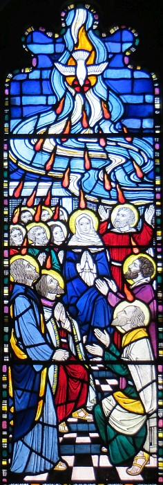

Et quand vînt l'jour d'la Pentecôte, i' 'taient rassembliés ensembl'ye. Et d'un co v'là tchi d'valit du ciel un brit coumme eune divèrse soûffliéthie tchi remplyit toute la maîson où'est qu'i' 'taient. Et i' vîdrent des langues, des fliambes dé feu, tchi jutchîdrent sus un châtchun dg'ieux. Et i' fûdrent remplyis du Saint Esprit, et d'visaient des difféthentes langues, coumme l'Esprit lus baillit du pouvé.
Assa y'avait des Juis, des pieux, dé toutes les nâtions ichîn bas, tchi d'meuthaient à Jérusalem. Et quand chu brit lus vînt ès ouïes, i' lus affliotchîdrent et fûdrent divèrsément ravis car châtchun dg'ieux ouïyait les patholes des discipl'yes dans san lîngo à li. Et i' fûdrent êmèrvilyis et dîdrent, "Ches hoummes-chîn, n'sont-i' pon des Galiléens? Coumme tchi don qué j'ouïyons, nous, lus d'vis s'lon not' patouais? Ès cheins d'la Parthie, d'la Médie et d'Élam, et ès cheins tchi d'meuthent en Mésopotanmie, en Judée et Cappadocie, au Pontus et en Âsie, en Phrygie et Pamphylie, en Êgypte et dans les contrées d'la Libye l'tou d'Cyrène, et ès cheins tchi sont v'nus d'Rome, ès Juis d'naîssance et ès convèrtis, ès Crétans et Arabes, ès touos nous i' d'visent s'lon nos langues à nous entouor l's accomplyissements du Bouôn Dgieu. Et i' 'taient touos êmèrvilyis et en avaient des doutanches et lus entré-disaient, "Coume tchi l'explyitchi don?"
Mais y'en avait d'aut's tchi lus en motchaient et dîdrent, "I' sont envitoués du frais vîn!"
Mais Pièrre s'butit, auve les onze, et dit d'eune forte vouaix, "Hoummes d'la Judée, et touos vous tchi d'meuthez à Jérusalem, èrmèrtchiz chennechîn et êcoutez mes patholes.
Quand vînt l'jour d'la Fête d'la Chînquantaine, i' 'taient touos ieux rassembliés dans l'même endrait. Et d'un co v'là tchi d'valit des cieux un camas coumme lé brit d'eune grande ventâl'lie, et chenna remplyit toute la maîson où'est qu'i' 'taient assis. Des lândgets froutchis, des manniéthes dé fliambes, géthîdrent parmi ieux et iun d'ches lândgets s'èrpôsit sus châtchun dg'ieux. Touos ieux i' fûdrent remplyis du Saint Esprit et lus êcanchîdrent à d'viser en d'aut's langues, ch'est en tchi l'Esprit lus en avait bailli l'ajet.
Assa y'avait des Juis pieurs dé toutes les nâtions souos les cieux tchi d'meuthaient à Jéthusalem. Y'avait tant d'train qu'du monde lus y affliotchîdrent, touos morfondus viyant qu'châtchun d'entré ieux les ouïyait pâler dans san d'vis à li. Êbézouis et êmèrvilyis, i' d'mandîdrent: "Ches'-chîn tchi pâlent, né sont-i' pon touos des Galiléens? Et coumme tchi don qué j'ouïyons, châtchun d'entré nous, not' d'vis à nous?"
Quand vînt l'jour d'la Chînquantaine, i' 'taient touos ieux ensembl'ye dans la même pliaiche. Et v'là tchi ventit d'un co des cieux un hardi grand camas tchi remplyit toute la maîson où'est qu'i' 'taient assis. L'avant à lus ièrs appathûdrent des langues tchi sembliaient fliamber épis tchi lus s'pathîdrent à seule fîn d'lus jutchi au d'ssus d'lus têtes. I' fûdrent touos ieux remplyis du Saint Esprit et c'menchîdrent à prêchi dans des difféthentes langues, coumme lé Saint Esprit lus baillait l'pouver.
Assa y'avait à chu temps-là des Juis fidèles tchi d'meuthaient à Jéthusalem mais tchi 'taient v'nus d'touos les pays du monde. Quand il' en ouîdrent lé brit, i' lus affliotchîdrent en grand nombre et en fûdrent divèrsément êpaûmis viyant qu'châtchun dg'ieux ouïyait ches hoummes-là prêchi dans sa langue à li. I' 'taient à jé n'sai et lus entré-dîdrent bein pozzlés:
"Égas don! Ches hoummes-là sont des Galiléens, n'est-che pon? Coumme tchi don qué j'les comprannons châtchun d'nous s'lon la langue qué j'avons pâlé d'pis qué j'têmes des mousses? Y'a des Partchiens, des Mèdes et d's Élamiens, épis des cheins tchi d'meuthent au pays des Deux-Riviéthes, et en Judée et Cappadocie, au Pont, en Âsie, Phrygie, Pamphylie, Êgypte et dans des bords d'la Libyie l'tou d'la Cythène, et d's arrivés d'Rome! Y'a des Juis et des convèrtis, dé Crétans et d's Arabes, tout coumme j'les ouïyons prêchi dans not' langue à nous entouor chein qu'lé Bouôn Dgieu a fait d'mangnifique!"
Et i' 'taient touos ieux ravis et n'savaient pon tchi en craithe. Véthe i' lus entré-r'dîthaient tréjous: "Tch'est qu'ous en criyiz?"
Mais y'en avaient tch'en faîthaient fouah et dîdrent: "Ches'-chîn ont ieu eune chîlée d'frais vîn!"
Viyiz étout:
{kind=link}